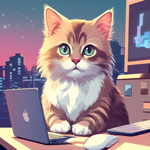

Cat Coding

Cat coding is a term used to describe the act of writing code while a cat is sitting on your keyboard. This is a common problem for developers who own cats. The cat will often sit on the keyboard and prevent the developer from getting any work done. Despite this, many developers find that having a cat around while coding can be a relaxing and enjoyable experience.